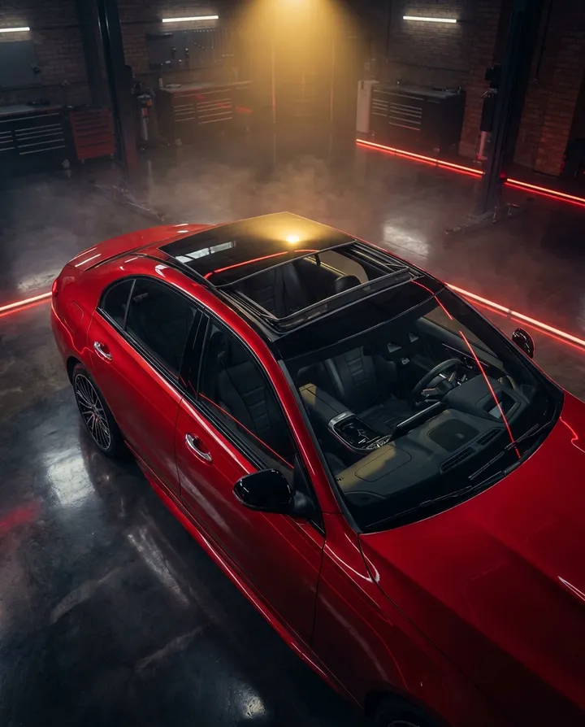

Restauración de clásicos
Restauración parcial o total: mecánica, eléctrico, cromos y detalles originales. Respetamos la historia de tu auto.
Cotizar →Taller automotriz · Ciudad Juárez, Chih.
Restauración de clásicos, pintura y carrocería, tapicería, iluminación, quemacocos y suspensiones. Todo en un solo taller, con acabados de primera y garantía por escrito.
Servicios
Desde una refacción hasta una restauración completa. Diagnosticamos, cotizamos por escrito y entregamos con acabados de fábrica o mejores.
Restauración parcial o total: mecánica, eléctrico, cromos y detalles originales. Respetamos la historia de tu auto.
Cotizar →Hojalatería, corrección de óxido y golpes, pintura completa o por pieza, igualación de color y pulido.
Cotizar →Asientos, cielos, alfombras, paneles y volantes en piel, vinil o tela. Diseños originales o personalizados.
Cotizar →Faros LED y proyectores, halos, calaveras, neblineros, barras y luz ambiental interior. Instalación limpia y segura.
Cotizar →Estéreos y audio, pantallas, cámaras, alarmas, estribos, parrillas, polarizado y todo lo que tu carro necesite.
Cotizar →Venta de refacciones para clásicos y modernos. Te conseguimos la pieza correcta y te la instalamos.
Cotizar →Venta, adaptación e instalación de quemacocos nuevos, y reparación de motores, guías, sellos y filtraciones.
Ver más →Reparación y mejora de suspensión: amortiguadores, bajadas, coilovers, suspensión de aire y levantamientos.
Cotizar →Especialistas en clásicos
Un clásico merece manos que entiendan su mecánica, sus materiales y su valor. Coordinamos restauración, pintura, tapicería y refacciones en un solo proyecto, por etapas y a tu ritmo.
Quemacocos
Somos especialistas en quemacocos: te lo vendemos, lo adaptamos a tu carro aunque no lo traiga de fábrica y reparamos el que ya tienes.
Quemacocos corredizos, panorámicos y de cristal, de buena calidad y con garantía.
Instalación en carros que no lo traen de fábrica, con corte preciso, sellado y drenajes.
Motores, guías, cables, sellos, filtraciones de agua y ruidos.

¿Por qué Norinko?
Presupuesto por escrito, desglosado en refacciones y mano de obra. Sin sorpresas al final.
Te mandamos fotos y videos de tu proyecto por WhatsApp en cada etapa.
Carrocería, pintura, tapicería, eléctrico y suspensión coordinados. Sin llevar tu carro de un lado a otro.
Respaldamos nuestra mano de obra y gestionamos la garantía de las refacciones con el fabricante.
Proceso
Revisamos tu carro, escuchamos lo que buscas y definimos el alcance.
Presupuesto por escrito con refacciones, acabados y tiempos. Aprobaste, apartamos tu lugar.
Trabajamos por etapas con reportes de avance y validación contigo.
Revisión final, prueba en calle y entrega de tu carro listo para presumir.
Preguntas frecuentes
¿No encuentras tu respuesta? Escríbenos por WhatsApp y te contestamos el mismo día.
Depende del carro, del estado de la lámina y del alcance. Después de revisarlo te damos una cotización por escrito y desglosada. Los proyectos grandes se pueden hacer por etapas para que se ajusten a tu presupuesto.
En la mayoría de los modelos sí. Revisamos la estructura del techo y te recomendamos el tipo de quemacocos adecuado. La adaptación incluye corte preciso, refuerzo, sellado y drenajes para evitar filtraciones.
Sí. Te conseguimos la pieza correcta para tu modelo. Si la instalamos nosotros, también garantizamos la mano de obra.
Iluminación, accesorios y reparaciones de quemacocos suelen quedar en 1 a 3 días. Pintura, tapicería y restauraciones se planean por semanas según el alcance. Siempre te damos una fecha estimada desde la cotización.
Efectivo, transferencia y tarjeta. En proyectos grandes trabajamos con anticipo y pagos por etapa conforme avanza el trabajo.
Cotiza tu proyecto
Llena el formulario y tu solicitud llegará directo a nuestro WhatsApp. Te respondemos con los siguientes pasos y una fecha para revisar tu carro.